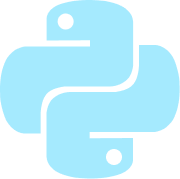

Desenvolvedor apaixonado por lógica algorítmica.
Foco em excelência e entrega de valor. Gosto de entender problemas e criar soluções.

Desenvolvedor apaixonado por lógica algorítmica.
Foco em excelência e entrega de valor. Gosto de entender problemas e criar soluções.
Sou estudante de Análise e Desenvolvimento de Sistemas na Fatec São José dos Campos, com foco em computação em nuvem e desenvolvimento de software.
Minha trajetória começou com interesse em lógica e desenvolvimento de jogos, evoluindo para projetos acadêmicos e para a área de cloud computing, onde participei de treinamento em AWS e representei o SENAI na SP Skills – Computação em Nuvem.
Tenho interesse em construir soluções bem estruturadas, entendendo não apenas o código, mas também a arquitetura e o ambiente onde ele está inserido. Sigo desenvolvendo projetos, aprofundando meus conhecimentos em desenvolvimento e infraestrutura, com o objetivo de atuar profissionalmente em ambientes cloud.
